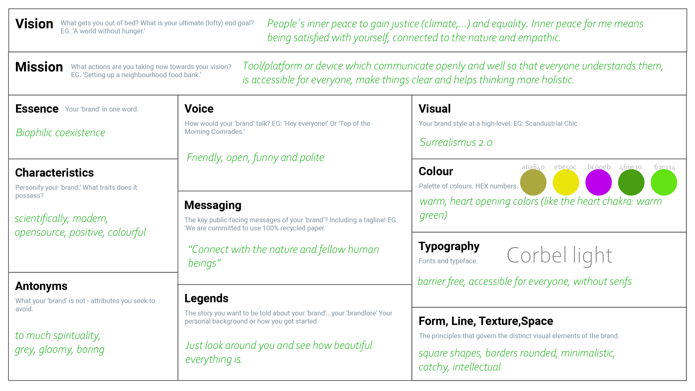

term 2
communication, brand & purpose

our purpose as a designer
First we should think about again why we are designer for emergent futures: I think everything is connected with design (products, graphics, books, music, movies, furniture, clothes and so on. And it’s a tool to communicate and create the industry 4.0, where I want to participate and not wait. The next task was to think about our purpose, which is stable through our beliefs and experiences. My purpose is satisfaction, justice and equality, because I think it helps against mental illness, a bigger collaboration between people and the nature and could prevent wars. I belief in the good in people and also in the fact if you really want something you can get it.
personal
This tasks really helped me to think about my personal brand, but first it helped me a lot to define more what I really want, what is my purpose, my beliefs, my experiences and what in the end I want to do with my brand. It was nice, but at the same time hard, because I think I am not good in specifying and focusing and also the topic story telling is difficult for me. I think storytelling is very important first to communicate what is your purpose, make it sounds interesting to attract people and make them listening, to find people buying your things and also to get other people involved. So basically make it thrilling, informative, clear and short. In the future want to work on that!
brand creating: own
Based on Kates presentation and the previous exersices the next step was to create a personal branding. The details you can see on the following file.
brand creating: slow lab
The next step was to create a brand board for our groups projects, so Audrey and me created a board for the "Slow Lab".
Term 2